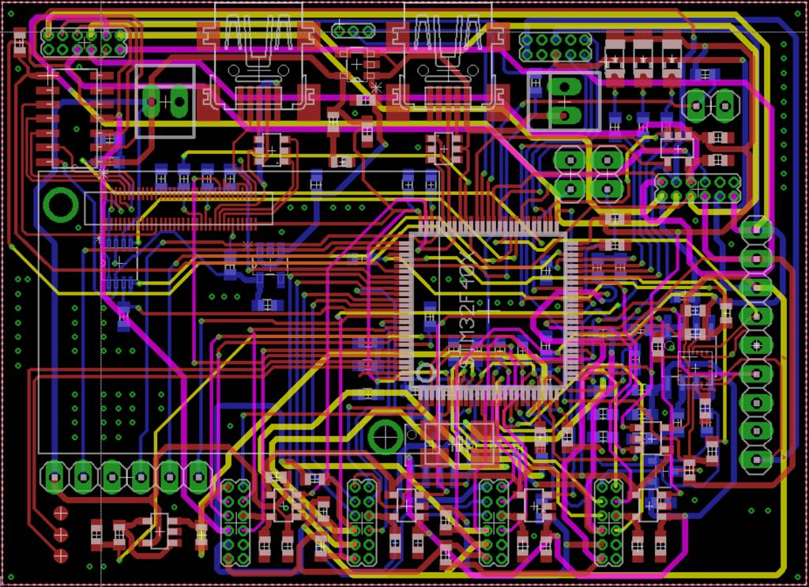
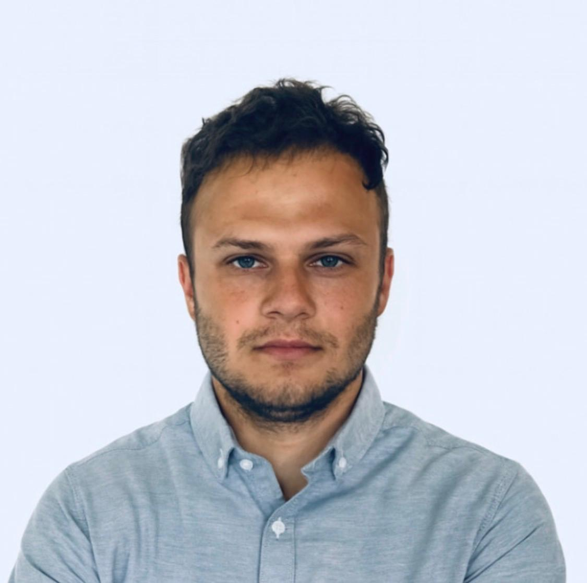

M.Sc. Electrical Engineering. 7+ Jahre Erfahrung in Defence und Telekommunikation.

Spezialisiert auf FPGA-SoC-Entwicklung in VHDL und C auf Intel- und AMD/Xilinx-Plattformen. Tiefes Know-how in 5G New Radio, O-RAN Fronthaul, RF-Systemen und digitaler Signalverarbeitung.
Freiberuflich tätig als Kleinunternehmen in Deutschland. Projekterfahrung aus Defence, 6G-Forschung und Cybersecurity.
Entwicklung FPGA-basierter Videodatenverarbeitungsketten. Automatisierung von Build-, Test- und Integrationsabläufen.
O-RAN Fronthaul mit DDR4 auf Arria10/Agilex7 SoC für 10G/25G. Custom Embedded Linux (Yocto). Kernel-Treiberentwicklung für AXI/Avalon.
Optimierung 10G-MAC-Filter über AXI. Python-Testsystem mit Jenkins CI-Automatisierung.
Radarsignalverarbeitung (FFT, FIR, CFAR, Doppler) in VHDL Fixed-Point auf Intel Stratix10. ARM–FPGA-Kommunikation über AXI4/DDR4.
FPGA-Interface auf Nios II, PCB-Layout mit Eagle, Matrix-Inverse auf FPGA mit DSPBA Builder.
Verfügbar für FPGA-Freelance-Projekte in Defence, Telekommunikation und 5G/6G.